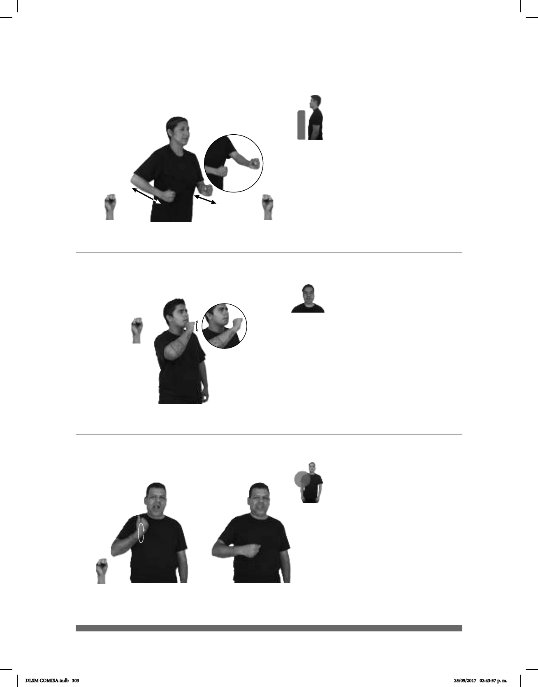

303
Seña: SM
S.1
Palma hacia dentro.
Sobre el pecho y se desliza hacia
la cintura.
Recto.
La boca simula la
acción de masticar, cuerpo ligeramente
ladeado hacia la izquierda.
sust. m. y adj. Persona de
origen mexicano a la que se discrimina por
su
apariencia, que habita en Estados Unidos
o en los estados mexicanos de la frontera
norte.
(S-30)
NEZAHUALCÓYOTL MUCHO CHOLO
área
En Nezahualcóyotl hay muchos cholos.
Seña: SM
S.1
Palma oblicua hacia la
izquierda y hacia abajo.
A la altura de la barbilla.
La mano se mueve
formando círculos.
Ceño fruncido.
sust. m. Noticia o
informe que se hace circular, bien sea
verdadero o falso, sobre una persona,
que puede enemistarla con otra o
confundir a quienes lo reciben.
(S-29)
SIEMPRE pro-TÚ CHISMES
Siempre dices chismes.
Seña: SS
S.1
Palmas hacia el centro.
A la altura del abdomen.
Recto de atrás hacia
adenlante repetidamente.
sust. m. Cepillo
estrecho que usan los carpinteros y
ensambladores para hacer los rebajos y
todo lo que no se puede cepillar con la
garlopa ni con otros cepillos.
(S-28)
LUGAR CENTRO CEPILLO-DE-CARPINTERÍA MÁS-O-MENOS COSTAR $1,000
En el Centro, un cepillo de carpintería cuesta más o menos $1,000.
,
DLSM COMISA.indb 303 25/09/2017 02:43:57 p. m.